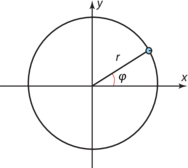
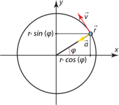

Jævn bevægelse: konstant fart
Generelt:
Formler:
-
-
-
- Da vinklen vokser proportionelt med tiden hvis der er konstant fart.

Formler:
Fart og hastighed:
Acceleration:

- Accelerationen er altid rettet ind mod centrum.
-
- Dette viser, at \vec{a} altid er rettet modsat \vec{r}. I den jævne cirkelbevægelse er accelerationen altid rettet mod centrum.
-
Krafter:
- Du ved fra Newtons 2. lov at \vec{F}_{\mathrm{res}} = m \cdot \vec{a}, og da accelerationen er rettet mod centrum, vil den resulterende kraft være rettet mod centrum.
-
- Ved jævn cirkelbevægelse kaldes den resulterende kraft også for centripetalkraften. Den er ikke en ny kraft, men en sum af andre kræfter.
Sted vektor: